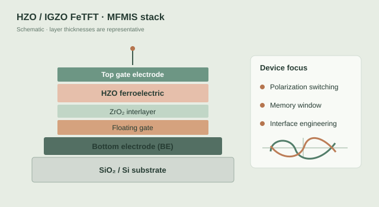
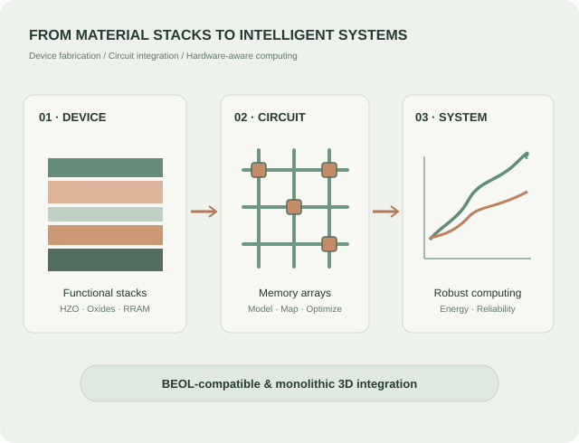
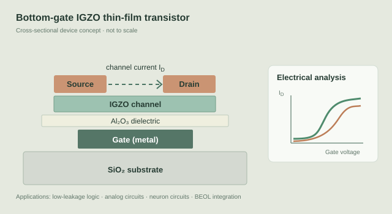
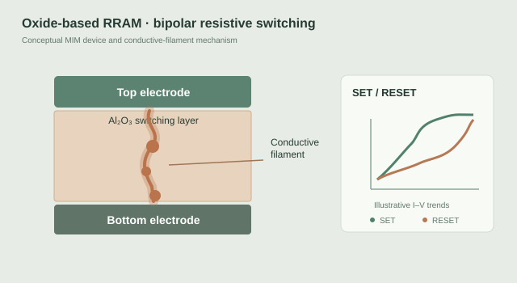
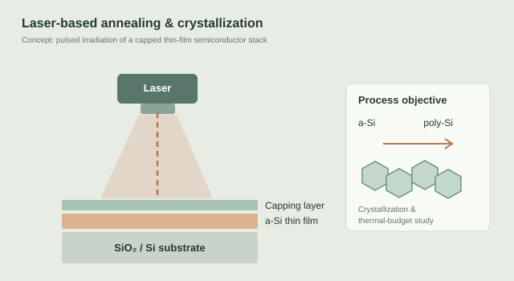
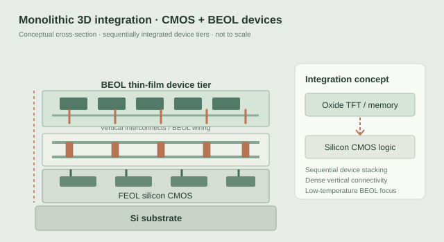
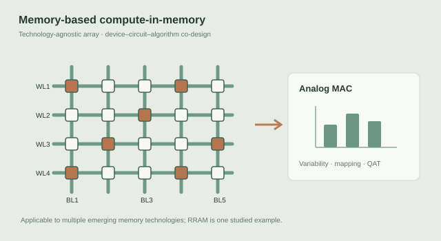

01 / DEVICE PHYSICS
Ferroelectric devices
HZO-based ferroelectric structures, FeTFT/FeFET characteristics, stack engineering, and nonvolatile device behavior.
SEMICONDUCTOR DEVICES · ADVANCED PROCESSING · COMPUTING
I'm Byeongchan Oh, a master's researcher at Seoul National University of Science and Technology (SeoulTech), working across semiconductor device fabrication, characterization, and hardware-aware computing.

01 / ABOUT
My research explores how novel electronic devices can enable more efficient computing architectures — from the material stack and transistor characteristics to circuits and system-level behavior.
As a master's student in Intelligent Semiconductor Engineering at SeoulTech, I have worked on HZO-based ferroelectric devices, IGZO thin-film transistors, and the electrical behavior and variability of Al₂O₃-based RRAM. I also participate in collaborative research on laser-based annealing and crystallization processes for semiconductor thin films. My interests include BEOL-compatible integration, monolithic 3D electronics, and device–circuit co-design.
I am especially interested in connecting experimental device results with practical circuit behavior and robust memory-centric computing systems.
02 / RESEARCH
Six connected directions spanning device physics, memory, integration, processing, and computing.

HZO-based ferroelectric structures, FeTFT/FeFET characteristics, stack engineering, and nonvolatile device behavior.

IGZO TFT fabrication and characterization, low-leakage electronics, and transistor-based circuits for emerging integration platforms.

Al₂O₃-based RRAM characteristics, resistive switching, wake-up behavior, and device variability for nonvolatile memory applications.

Collaborative studies of laser annealing and crystallization of semiconductor thin films, with emphasis on thin-film structures, annealing conditions, and process integration.

BEOL-compatible device integration and stacked architectures for dense and energy-efficient computing, including thin-film electronics built above silicon CMOS and vertically integrated memory–logic systems.

Hardware-aware CIM research across emerging memory devices, including conductance mapping, variability-aware quantization, and fault-tolerant learning.
Enabling dense, energy-efficient systems through BEOL-compatible devices and monolithic 3D integration.
03 / PUBLICATIONS
Peer-reviewed journal articles in emerging memory, ferroelectric devices, and hardware-aware computing.
ACS Applied Electronic Materials, 8(9), 4041–4051 (2026)
Proposed σ-clipping before post-training quantization and validated improved inference robustness using a 48 × 48 Al₂O₃/TiOₓ-based RRAM crossbar array.
View publication · DOI: 10.1021/acsaelm.6c00222 ↗Advanced Science, 13, e76619 (2026)
Demonstrated dual-mode computation in an AND-type charge-trap flash array, combining transistor-mode current sensing with capacitor-mode charge sensing for adaptable AI workloads.
View publication · DOI: 10.1002/advs.76619 ↗Microelectronics Journal, 176, 107401 (2026)
Investigated HZO/Al₂O₃/HZO interlayer engineering through grain-resolved TCAD simulations, showing reduced polarization nonuniformity and memory-window variability.
View publication · DOI: 10.1016/j.mejo.2026.107401 ↗Electronics, 14(10), 1921 (2025)
Examined cycling-induced wake-up effects in Al₂O₃-based RRAM, including improved high-resistance-state uniformity and more gradual SET switching.
View publication · DOI: 10.3390/electronics14101921 ↗04 / EXPERIENCE
Hands-on process development, device characterization, research infrastructure, and interdisciplinary work.
As an early member of a newly established research laboratory, I helped build experimental workflows—from developing fabrication recipes to setting up electrical measurements and documenting reproducible procedures.
Developed and optimized fabrication steps for HZO-based ferroelectric devices and IGZO TFTs, including ALD of HZO and Al₂O₃, sputter deposition of electrode materials, photolithography, plasma etching, and post-deposition annealing. Investigated device-stack and process-condition effects on electrical behavior.
Supported the setup and day-to-day operation of shared cleanroom equipment, with direct responsibility for ALD, lithography, and ICP-CVD systems. Established process recipes and operating procedures, prepared equipment manuals and safety guidelines, trained new users, and coordinated equipment access across research projects.
Performed DC and pulse-based characterization of RRAM, IGZO TFTs, ferroelectric capacitors, and FeTFTs. Evaluated resistive switching, device variability, retention, and transient and capacitance responses. Used measured transistor characteristics for compact modeling and SPICE simulations of inverters, neuron circuits, and device–circuit integration.
Evaluated RRAM-based CIM hardware through conductance-based weight mapping, experimental array-level neural-network inference, and analysis of device variability. Developed σ-clipping and quantization strategies to improve inference robustness, and assessed current- and capacitance-mode flash CIM architectures through system-level simulations.
Contributed to industry–academia collaborative research on laser-assisted crystallization of amorphous silicon for advanced thin-film transistor technologies. Investigated amorphous-Si deposition, laser annealing conditions, thin-film stack structure effects, and process integration toward poly-Si formation and BEOL-compatible device fabrication.
05 / CURRICULUM VITAE
A concise overview of education, research focus, and selected scholarly work. Download my full academic CV for detailed research experience, publications, and technical skills.
06 / CONTACT
Interested in emerging devices, memory-centric computing, or potential research collaborations? I'd be glad to connect.